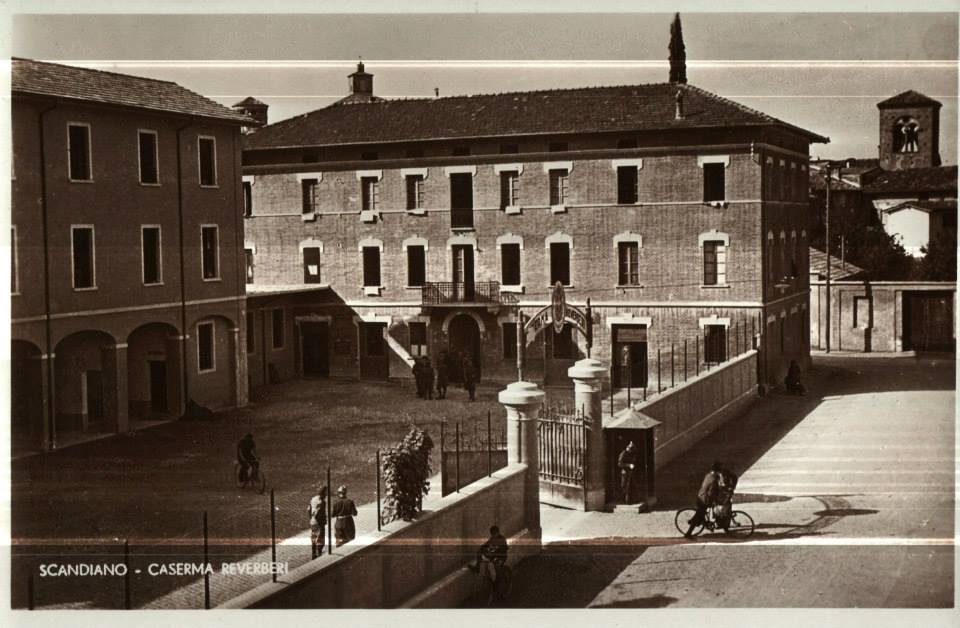

TAPPA 2: Piazza Nuovo Mondo
2.1 - Cristoforo Carabillò

Dove oggi sorgono i due condomini e la piazzetta “Nuovo Mondo” aveva sede la Caserma “Reverberi” dell’Esercito italiano. Con l’occupazione tedesca dopo l’8 settembre 1943 la caserma venne utilizzata anche quale sede dell’esercito tedesco.
Era di stanza qui il tenente dei bersaglieri CRISTOFORO CARABILLÒ, siciliano, originario di Castelbuono in provincia di Palermo. Già prima dell’8 settembre del '43, aveva cominciato a trafugare armi per consegnarle ai partigiani, e infine aveva disertato per entrare nella Resistenza in una S.A.P., Squadra di Azione Patriottica, con l'incarico di segretario del Comando unificato di settore.
Per molti mesi Cristoforo visse in clandestinità, per la maggior parte del tempo accolto e nascosto a Ca' de Caroli nella casa di Maria Aramini, madre dei fratelli partigiani Barbieri Carlo, Umberto e Remo.
Quando la Liberazione era ormai vicina, il 27 dicembre 1944, "Cris" (questo il nome di battaglia scelto da Carabillò) fu intercettato nei pressi del Caffè Boiardo di Scandiano da una pattuglia della G.N.R., Guardia Nazionale Repubblicana e fu imprigionato nel carcere reggiano dei "Servi", tristemente famoso per le torture e le sevizie che vi si praticavano. Infine, fu fucilato in via Porta Brennone a Reggio Emilia insieme a Vittorio Tognoli "Marco" di Scandiano, a Sante Lusuardi "Dario" e a Dino Turci "Ercole" di Correggio.
I corpi straziati dei quattro giovani assassinati saranno lasciati per giorni sulla neve con le mani legate con il filo di ferro, con il divieto di rimuoverli e di darvi sepoltura, come monito alla popolazione civile a non collaborare con la Resistenza.
Le esequie, come per tantissimi altri, non saranno possibili se non dopo la Liberazione del Paese. Sepolta provvisoriamente a Scandiano insieme a Vittorio Tognoli, la salma di Carabillò sarà successivamente trasferita a Castelbuono di Palermo, luogo di origine e di residenza della sua famiglia.
Era di stanza qui il tenente dei bersaglieri CRISTOFORO CARABILLÒ, siciliano, originario di Castelbuono in provincia di Palermo. Già prima dell’8 settembre del '43, aveva cominciato a trafugare armi per consegnarle ai partigiani, e infine aveva disertato per entrare nella Resistenza in una S.A.P., Squadra di Azione Patriottica, con l'incarico di segretario del Comando unificato di settore.
Per molti mesi Cristoforo visse in clandestinità, per la maggior parte del tempo accolto e nascosto a Ca' de Caroli nella casa di Maria Aramini, madre dei fratelli partigiani Barbieri Carlo, Umberto e Remo.
Quando la Liberazione era ormai vicina, il 27 dicembre 1944, "Cris" (questo il nome di battaglia scelto da Carabillò) fu intercettato nei pressi del Caffè Boiardo di Scandiano da una pattuglia della G.N.R., Guardia Nazionale Repubblicana e fu imprigionato nel carcere reggiano dei "Servi", tristemente famoso per le torture e le sevizie che vi si praticavano. Infine, fu fucilato in via Porta Brennone a Reggio Emilia insieme a Vittorio Tognoli "Marco" di Scandiano, a Sante Lusuardi "Dario" e a Dino Turci "Ercole" di Correggio.
I corpi straziati dei quattro giovani assassinati saranno lasciati per giorni sulla neve con le mani legate con il filo di ferro, con il divieto di rimuoverli e di darvi sepoltura, come monito alla popolazione civile a non collaborare con la Resistenza.
Le esequie, come per tantissimi altri, non saranno possibili se non dopo la Liberazione del Paese. Sepolta provvisoriamente a Scandiano insieme a Vittorio Tognoli, la salma di Carabillò sarà successivamente trasferita a Castelbuono di Palermo, luogo di origine e di residenza della sua famiglia.